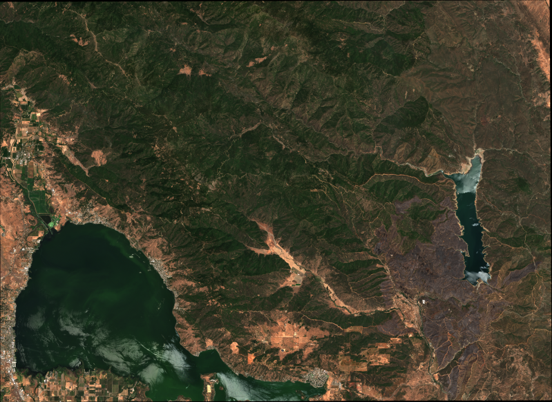
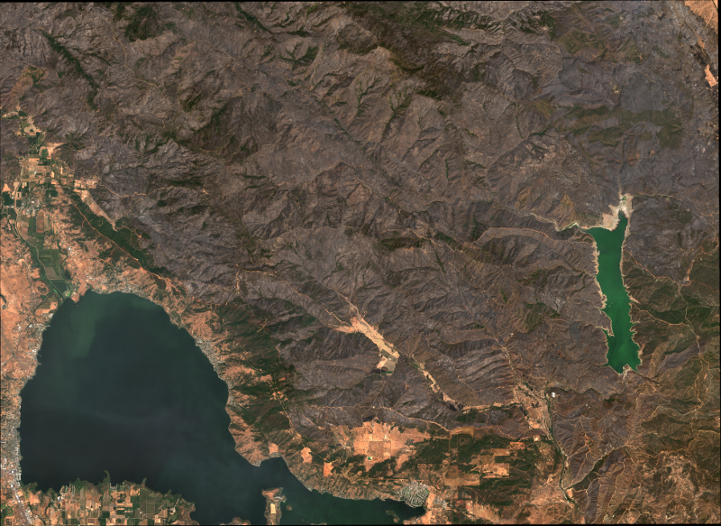

Quickstart Examples¶
This section contains example uses and code listings.
Clear Lake Wildfires¶
During the summer of 2018, wildfires spread across a large area in Clear Lake, California. Using a .geojson file (see below) to describe the burn area, we can request and crop Sentinel images of the area for inspection.
To get True Colour Images from the Copernicus Hub:
from getsentinel import gs_downloader, gs_localmanager
from getsentinel import gs_stacker, gs_processor
from datetime import date
start = date(2018, 7, 12)
end = date(2018, 8, 23)
# Build the query - Sentinel-2, Level-1C, 0% cloud cover
query = gs_downloader.Query('S2', start, end, 'clearlake.geojson')
query.product_details('L1C', cloudcoverlimit=0)
# Submit the query to Copernicus Hub and filter out product overlaps
hub = gs_downloader.CopernicusHubConnection()
total, products = hub.submit_query(query)
products = gs_downloader.filter_overlaps(products, query.ROI)
# Download the products
hub.download_quicklooks(products)
hub.download_products(products)
# Process the downloaded products to Level-2A
l2a_products = gs_processor.batch_process(products)
# Call the stacker and extract the True Colour Image 10m resolution data
stacker = gs_stacker.Stacker(l2a_products, 'clearlake.geojson', start, end)
stacker.set_bands(s2_band_list=['TCI'], s2_resolution=10)
data = stacker.generate_stacks()
TCI = data['clearlake']['TCI']
Where TCI contains data for two of the following images
{kind=link}
12th July 2018 - © ESA Copernicus Open Access Hub https://sci-hub.copernicus.eu/
{kind=link}
23rd August 2018 - © ESA Copernicus Open Access Hub https://sci-hub.copernicus.eu/
clearlake.geojson:
{
"type": "FeatureCollection",
"features": [
{
"type": "Feature",
"properties": {},
"geometry": {
"type": "Polygon",
"coordinates": [
[
[
-122.9253387451172,
39.00744617666487
],
[
-122.47489929199219,
39.00744617666487
],
[
-122.47489929199219,
39.26256305521199
],
[
-122.9253387451172,
39.26256305521199
],
[
-122.9253387451172,
39.00744617666487
]
]
]
}
}
]
}